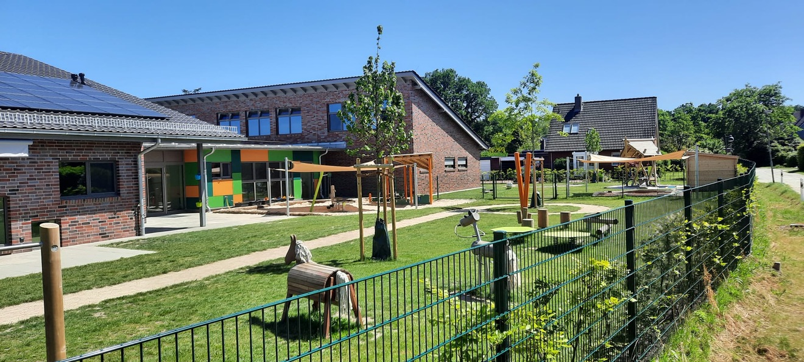

Spielplatzkontrollen & Abnahmen
Visuelle und operative Kontrollen sowie Hauptinspektionen nach DIN EN 1176/1177, inklusive Abnahme neu errichteter Spielplätze.
Mehr erfahrenSachverständigenbüro · Wiesmoor
Gutachterbüro Berens prüft Spielplätze, nimmt Bauleistungen im Garten- und Landschaftsbau ab und ermittelt Schäden an Bäumen und Grünanlagen – unabhängig, normgerecht und nachvollziehbar dokumentiert.

Ob wiederkehrende Spielplatzkontrolle, strittige Bauabnahme oder die Bewertung eines geschädigten Baumbestands – jedes Gutachten wird nachvollziehbar begründet und ist im Streitfall belastbar.
Visuelle und operative Kontrollen sowie Hauptinspektionen nach DIN EN 1176/1177, inklusive Abnahme neu errichteter Spielplätze.
Mehr erfahrenFachliche Bewertung von Ausführungsqualität und Bauleistungen – als Grundlage für Abnahmen oder bei Streitigkeiten zwischen Auftraggeber und Ausführendem.
Mehr erfahrenWertermittlung von Schäden an Bäumen, Gehölzen und Grünanlagen, etwa nach Bauschäden, Unfällen oder unsachgemäßer Pflege.
Mehr erfahrenVor Ort tätig in ganz Ostfriesland und dem nordwestlichen Niedersachsen – unter anderem in:
Einsätze außerhalb dieses Gebiets sind auf Anfrage möglich.
01
Bewertung ohne Bindung an ausführende Firmen oder Hersteller.
02
Prüfungen orientieren sich an den geltenden DIN-Normen des Fachbereichs.
03
Jedes Gutachten ist schriftlich, verständlich und im Streitfall belastbar dokumentiert.
04
Direkter Ansprechpartner von der Anfrage bis zum fertigen Gutachten.
Schildern Sie kurz Ihr Anliegen – Sie erhalten zeitnah eine Einschätzung zu Ablauf und Umfang des Gutachtens.
Jetzt anfragen